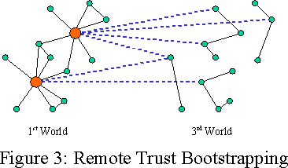

| |
The
Digital Path: |
||||||
Appearing in
Markets, Information
and Communication.
Austrian Perspectives on the Internet Economy
Routledge 2003.
scanned-in pdf (8MB)
Abstract
Inadequate and ill-adapted property institutions in the third world prevent the extralegal assets of the poor from serving as capital. In particular, the absence of credible systems of title transfer makes real estate holdings ineffective as collateral for loans. How can this barrier to wealth creation be surmounted? Country-by-country institutional reform is possible, but inevitably slow. New options based on computer networks and trusted computational agents may provide a shorter path. By leveraging trust in first-world institutions while enabling the evolution of contractual arrangements that fit local needs and traditions, this approach could bring advanced property systems to regions now paralyzed by their absence.
Introduction
Hernando de Soto, in The Mystery of Capital [deSoto00], shows that the poor of the world have, in his terminology, assets vastly in excess of their capital. In one study, de Soto's associates surveyed neighborhoods in various poor countries, assessing the value of buildings which were not formally titled. The extrapolated value of just the informally owned buildings in the third world amounted to $9.3 trillion -- more than half the combined value of all publicly traded U.S. companies. In identifying a crucial mystery -- the failure of these assets to serve as capital for their owners -- de Soto has identified a great opportunity for economic betterment.
De Soto's focus is on the informal sector -- that sphere of economic activity that occurs outside the official formal legal system. Most of the economic activity of the third world's poor occurs in the informal sector. Despite the non-official status of the informal systems of laws and property in this sector, they are nevertheless quite real, and form the foundations on which these informal economies function. However, the formal and informal sectors are not otherwise equivalent. The poor pay a great price for informality -- most of all in the difficulty of capital formation.
As a simple example, the house you live in, from which no one would attempt to evict you, is an asset. The recognition and sense of legitimacy in your local community of your claim to the house makes this asset effectively your property. A mortgage on that house would be capital. (In countries that have become rich, mortgages in particular have been a major source of highly decentralized investment, seeding many family businesses.) But just because no one can evict you from your house, this does not mean a bank dares accept it as collateral for a loan. The distinction is one of credibility of property rights transfer at a distance, i.e., the ability to engage in binding contracts such that the new owners could be confident they could indeed evict you as part of the contract, despite their distance from your community.
De Soto hopes to bring the power of capital to the poor by strengthening their property rights in accord with historical precedents in the advanced economies -- that is, by reforming and extending the legal systems and bureaucracies of their various national governments. This is no easy task: the benefits of reform flow to the now-marginalized property owners, but the benefits of inertia rest with the power holders. De Soto argues powerfully that property-system reform should be a primary political objective, and we concur.
This paper, however, explores another path to de Soto's objective, one opened by new technologies of the Net. Given the exponential rate at which the cost of electronics and wireless communications are falling, the cost of the technology itself should rapidly become a non-issue, even for the world's poorest. Because binding contracts for ownership transfer lie at the heart of capital formation, what if traditional contracts were supplemented and/or supplanted with smart contracts? Smart contracts will enable cooperation among mutually suspicious parties, often without need for legal recourse. Could such a jurisdiction-free contracting mechanism, accessible over the Net, dramatically increase capital liquidity, spawning a flood of new wealth in the poorest areas of the world?
Overview
The rest of the paper is organized as follows:
Networks of Trust synthesizes ideas from de Soto and Francis Fukuyama to suggest the strong role played by widely trusted intermediary institutions, or trust hubs, in forming working large-scale trust networks, especially the institutions of title and law. We explain de Soto's program, which we call the governmental path, to address the absence of these institutions by bringing the informals into governmental systems of formal law and property. We make explicit the conflict faced on this path between local knowledge and global transferability.
We propose an alternate jurisdiction-free digital path, made possible by new technologies, that could leverage the existing wide recognition of first world institutions to short circuit the slow growth process of the other paths.
Smart Contracts are contracts as program code, where the terms of the contract are enforced by the logic of the program's execution. In a series of steps, from the basic metaphor of contracts as board games, through the nature of contract-created derivative rights, to compositions of games to turn assets into capital, we explain how smart contracts can resolve the conflict -- gaining the benefits of global transferability without sacrificing local knowledge.
Backing and Legitimacy. Why would a change of electronic title be locally honored as a transfer of control of the actual assets? The governmental path provides backing by coercive enforcement. How may the non-coercive digital path address these issues instead? By ratings -- independent estimates of the likelihood that a title listing would be honored; like credit reports for systems of local law. And by video contracts to bridge between the above abstract world and local systems of largely unwritten arrangements. An example shows how the outcome of a smart contract may gain local legitimacy.
Limitations and Hazards. What other novel problems will we encounter on the digital path? First, smart contracts will be unable to express the subtle richness of contracts written in natural language, leading to techniques for combining the two kinds of contract elements into split contracts. Second, a naively deployed smart contract system could exacerbate rather than diminish the dangers of regulatory capture -- the participants could end up with less vulnerability to local governments but more vulnerability to distant governments, over which they exert even less influence. This section explains how both of these problems may be addressed.
Being untested, we can be sure the digital path will encounter further problems, indeed more problems than we can anticipate. This section just scratches the surface.
Why the Third World First? Why may the third world lead the first in the transition to smart contract mediated global commerce? Because of differences in the nature of legitimacy in these two worlds. Because the first world has already paid the homogenization costs -- it has already lost the diversity the digital path could have preserved. And because the third world lacks a working installed base of law and property, which could lead to the leapfrogging seen with cell phones in Eastern Europe.
Besides being first through this transition, the third world's success may cause the first world to follow along.
The Rule of Law and Not of Men. In one respect at least, the character of life on the digital path may be more familiar to the past than the present. It would be an almost literal realization of the classical liberal ideal.
Networks of Trust
Why are some societies so much better able to generate wealth than others? During the great oppressions of the twentieth century, many people, including ourselves, held the naive view that once oppression was out of the way, markets would bloom and take care of the people. This has proven tragically wrong. The years since then have shown that the absence of oppression was not enough. Free speech was not enough. The end of socialism was not enough. The universal desire for capitalism was not enough. In order to successfully help, we must first solve this riddle. Many people have tried, and the answers proposed by Hernando de Soto and Francis Fukuyama are especially insightful and complementary.
Fukuyama's Trust [Fukuyama95] makes many perceptive observations of how the world's cultures differ regarding attitudes and proclivities towards trust -- how easily, and under what conditions, members of a particular culture come to trust each other. In the high trust societies, mutually trusting relationships are easily formed. In low trust societies they are not. In Fukuyama's taxonomy, the third major category, familial trust societies (or Confucian societies), is not between the other two on a spectrum. Rather, it is a different stable pattern characterized by dense networks of high trust within families, but rather low trust between families. Fukuyama shows how these different patterns of trust seem to explain some of the observed differences in the patterns of businesses that arise in these cultures. Complex cooperative arrangements require trust, so not surprisingly, Fukuyama's high trust societies are the ones best able to generate vast amounts of wealth.
But to understand the success of the first world requires something more than Fukuyama's analysis. No matter what the culture, simple cognitive limitations prevent any of us from knowing, much less trusting, more than a very small fraction of the members of our societies [Hayek37]. Nevertheless, in the first world massive numbers of strangers meet, trade, do business, negotiate, and sign contracts, despite lack of any prior knowledge of, or reasons to trust in, each other. How is this possible?
De Soto's earlier book, The Other Path [deSoto89], tells a complementary story. De Soto can also be understood as explaining differences in economic organization according to differences in the possibilities for trust. However, de Soto's emphasis is not culture but institutions, and their lack. De Soto's portrayal of the poor within a third world village is not one of culturally-based low trust. Rather, it is the painful lack of the various widely trusted intermediary institutions that catalyze commerce at a distance, and that we normally take for granted in the first world.
Trust relationships can be thought of as analogous to the airport hub and spoke pattern. (Figure 1). Many small local networks are interconnected on a wider scale through major hubs. Although this pattern is a partial centralization, it is not a hierarchy -- there is, for example, no central hub of hubs. Logically, it is peer to peer, but it is built with a backbone architecture due to the economics of the system. The Net itself has mostly the same architecture, as does the highway system. In all cases, a sparsely connected actual network acts for most purposes like a densely connected network. For example, from any airport you can fly to any other airport, almost as if there were flights between every pair of airports. For many purposes, it acts like the network shown on the right.
Similarly, in the first world, two strangers can meet and conduct business as if they had prior knowledge of and trust in each other, by virtue of their reliance on a mutually recognizing backbone of widely trusted intermediary institutions, or trust hubs. These hubs are in the business of securing these relationships to minimize the risks their customers face from each other; this often requires them to absorb some of these risk onto themselves. The economies of scale available to a hub can help tremendously with these risks. Historically, western societies have developed specialized hubs that bundle trust with other expertise: one trusts Citibank not only because Citibank has a demonstrated history of reliably backing their loans, but also because they are experts in loan and risk management, which are necessary elements of reliability in that field: an organization that attempted to engage in banking without expertise in these fields could not be trustworthy no matter how honorable the employees and executives of the organization might be.
Other examples of familiar trust hubs include title companies, insurance, escrow, exchanges and auction houses, underwriters, Consumer Reports, Roger Ebert, notaries, arbiters, courts and cops, money, etc... The list is endless.
From a simple graph-theoretic point of view (inspired by [Granovetter73, London97]), we can analyze the Fukuyama low-trust world (in which the fanout from each node is small) and the de Soto missing-hub world, and immediately recognize which effect has the greater impact on a society's effectiveness: it is the absence of the hubs that ultimately prevents large scale complex cooperative arrangements from forming. Even with high cultural proclivity for individual-to-individual trust, in the absence of hubs, the resulting virtual network would at best form small islands of densely connected networks, only loosely connected to each other. The resulting picture resembles both Fukuyama's portrayal of familial trust societies, and de Soto's portrayal of networks of villages of informals.
| The division of labor is limited by the extent of the market. --Adam Smith Modern civilization has given man undreamt of powers largely because, without understanding it, he has developed methods of utilizing more knowledge and resources than any one mind is aware of. --Friedrich Hayek [Hayek78] |
The virtual network of Figure 1 forms one large market with great extent, enabling a great division of knowledge and labor. The virtual network of Figure 2 is one of many separate markets, barely connected to each other, and each individually of minor extent.
But shouldn't this situation be an ideal growth medium for hubs? If there is great market need for them, then surely there is great demand and great opportunity. Indeed, this is the situation from which the hub backbone grew spontaneously in the West. Absent government oppression we should indeed expect it to grow here as well. However, the West's backbone of hubs are the result of slow growth processes; they build slowly over time. The widespread trust needed by these institutions can be seen as a form of capital that takes a long time to accumulate.
One of the depressing features of the pictures painted by both Fukuyama and de Soto is that the only hope they see for these societies is homegrown, with each individual third world nation bootstrapping itself through all these steps, including, for de Soto, the evolution of their own hubs; or the reform and transformation of each society's national government into a system that may be widely trusted. Well, it took a long time for the West. If they must recapitulate our path, it will take them a long time as well, a time during which desperate poverty will remorselessly prevail. What enablers are available now that were unavailable when the West made this transition? Might these enablers be used to help accelerate today's poor through this part of the process of capital formation?
The Special Roles of Title and Law
In The Other Path, de Soto explained the informal economy and its lack of institutions in general. Eleven years later, after much investigation both of the phenomenon of persistent poverty, and an extraordinary uncovering of the history of how the West overcame these problems, in The Mystery of Capital de Soto has narrowed his focus to the crucial role played by the institution of title transfer.
While all these hubs are valuable for the formation of wealth creating societies, not all are equally crucial. De Soto's analysis suggests that the institutions most needed to get the ball rolling, and which are most painfully absent in the informal sectors of the third world, are credible systems of title transfer. It is through widely trusted title registries that banks can become confident that the collateral against which they make a loan will indeed become theirs in the event of default. This requires not just trust in the title company itself, but credibility that a transfer of title on the books will be honored as a transfer of ownership in reality. Title registries with this level of credibility enable rights transfer at a distance: people who have never met one another and probably never will can engage in asset transfers and capital formation with the confidence that they will acquire the goods specified in the contract.
Although de Soto documents the creation of extralegal title companies in the informal sector, these do not currently seem able to provide the credibility at a distance needed for this transition.
The Governmental Path
Among currently existing choices, perhaps the only organizations that can fill this crucial titling role in a nation are formal ones backed by government itself. A government bundles together widespread recognition, some sense of legitimacy, and powers of enforcement. This is the strategy de Soto has adopted, converting extralegal assets, village by village, into officially acknowledged parts of the formal economy. The strategy has been wildly successful in bringing the poor into the modern world. Working with the government of Peru, over four years, de Soto's organization helped a quarter of a million people formalize many of their assets, creating new capital, and producing $2.1 billion of new tax revenues for the government of Peru. One may hope and expect that these demonstrated tax revenues, if nothing else, will tempt other governments to follow suit.
De Soto's isn't the first attempt to title the informals' property and bring them into the formal sector, but it is the first such attempt in the third world to work on a large scale. De Soto documents previous well intentioned efforts, with surveyors, geographic information systems, interviews of informals to ascertain who owns what, and formal title registries backed by the formal legal system -- all the obviously necessary ingredients. Why did these previous attempts all fail?
Because the formals did not appreciate that the informals already had worked out systems of law, rights, and obligations, negotiated over time and idiosyncratic village by village. These systems are sometimes called the people's law. Instead, the formals' approach to the situation was We have a legal system. You don't. Here's ours. Although the title listings reflected a snapshot of who-owns-what, the legal system governing these title listings did nothing to reflect the complex informally negotiated arrangements needed to understand what rights someone actually held to a particular asset. Given this mismatch, the informals proceeded to ignore the formal title registries and trade assets in the way they always had. The title registries were not updated to reflect changes of actual ownership, and so rapidly became even more irrelevant. De Soto's special insight in this situation has been that the government must discover and respect the local laws, and work out, at considerable cost in time and effort, a way to integrate those local laws with the national systems.
The Conflict: Local Knowledge vs. Global Transferability
The difficulty comes from an inherent conflict between local knowledge and global transferability -- local knowledge of the idiosyncratic people's law, conventions, and negotiated arrangements in force in each village, vs. the need to move the governance of title transfer to hubs, whose wide scope would seem to require them to operate from a more homogenized set of rules. This tension is acute on the governmental path, as the homogenized set of rules is not even per title company, but is rather the official legal system itself. Governmental legal systems are hardly the wonders of adaptability de Soto's program would seem to require. Even with the best of intentions, an accommodation between the two must rapidly turn into a Procrustean bed. However, de Soto offers no alternative. Though difficult, he is somehow successfully making this path work, and he documents how it did work when formal U.S. law, slowly and painfully, absorbed the informal wild west.
As if this path were not difficult enough, this whole process faces enormous obstacles from many different factions, notably bureaucracies and lawyers within the national sphere that see this as an assault on their prerogatives, as de Soto also documents. The process never becomes easy: each step of progress is another major upheaval in the perceptions and preferences of entrenched groups dedicated to protecting the status quo.
The Digital Path
Can we sidestep this brutally painful process? Perhaps with the Net, cryptography, and capability-secure platforms -- languages [Hewitt73, Tribble95, Rees96, Miller00] and operating systems [Hardy85, Shapiro99] able to run hostile code safely and flexibly. Describing how existing incentives and new technologies could give rise to new wealth-creating institutions may help us coordinate our activities to move the world in this direction. We describe these possibilities in mostly abstract terms until the section on Video Contracts below, in which we introduce another technological ingredient -- one for connecting this abstract world to the concrete lives of the poor.
| National borders aren't even speed bumps on the information superhighway. --Tim May |
Due to the Net, purely electronic goods and services can now be purchased from across the world as easily as from next door. Consumers of these goods and services have already escaped old limits of geography and jurisdiction [Johnson96]. If the functions normally provided by trust hubs were offered by well-known first world trust hubs as purely electronic services, those in need of such widely trusted intermediary services could escape as well -- escape from the crushing assumption that such services can only be provided by institutions backed by their own governments. Instead, they could reach across the Net to use these services, and begin to bootstrap themselves out of their poverty by participating in the global networks of commerce. (Figure 3)
Many first world trust hubs are already widely known and plausibly trusted in the third world because of the pervasive spread of western media: shows ranging from CNN to Dallas and Baywatch have granted name recognition and an aura of respectability to first world organizations that most governments can only envy. (However one may feel about this process, it is occurring, so we may as well put it to good use.) Using first world hubs, villages on a global scale could become part of a global trust network. For example, if a person in village A wants to sell a tractor to a person in village D, a couple of villages away, they could easily use a title registry run by Citibank in New York to execute the transfer. In a similar fashion, the tractor may be securitized, transforming it into capital. And in a state such as Russia, a title listing with Citibank would, ironically, have more legitimacy because the titling institution is beyond the reach of their own government.
Once the villages of the world join this global village, it will be much easier for them to grow their own high-trust hubs as well: an entity becomes widely trusted by consistently and visibly performing in accordance with various contracts -- contracts being managed by hubs that are already widely trusted. With a working trust backbone, highly trustworthy behavior gets the visibility it needs to more rapidly accumulate its own reputation-capital.
Smart Contracts
How might such hubs deal with the idiosyncrasies of each village's people's law -- the idiosyncrasies that sabotage traditional governmental attempts to capitalize village assets -- without taking on the impossible burden of learning all this local knowledge itself, and without imposing the costs of homogenization? By the use of smart contracts.
In smart contracts, a software program is the operational embodiment of a contract [Szabo97], where the program's behavior enforces the terms of the contract, or at least raises the cost of violating the contract. Szabo introduces the concept with the example of a drink vending machine. A drink vending machine is a very primitive example of a smart contract being executed on a contract host -- the vending software executing on the vending machine hardware. This combination of contract and contract host is a partially trusted intermediary between the drink manufacturer and the purchaser. It escrows drinks and money, and performs an exchange of those goods when both have been presented. There is even a rollback process, in which it returns the money if the drink cannot be delivered. Traditional contracts are understood to be backed by a coercive enforcement system made of courts and cops. However, the vending machine does not have the option of such recourse following a breach. In what sense is it a contract?
The vending-machine-as-contract would indeed require separate enforcement if it dispensed the drink first and then demanded payment. However, by escrowing both drinks and payment before dispensing either, it also dispenses with the need for separate enforcement. Instead of enforcement, the contract creates an inescapable arrangement. It cannot prevent the customer from walking away before the game is over, but a customer who walks away from a contract in progress leaves behind any assets escrowed by the contract at that point [Miller00].
(The vending machine is partially and asymmetrically trusted, as both parties know that it is ultimately an agent only of the drink manufacturer. Other smart contract scenarios involve more symmetric mutually trusted third parties.)
Although conventional coercive recourse is still often possible on the Net, for more and more Net commerce these costs are too great, and the jurisdictional issues potentially too messy. Instead, Net businesses have been engaging in rich and rapid experimentation with cooperative arrangements that require no coercive recourse [Krecke01]. The most common arrangements involve not actual escrow, but reputation feedback and credit [Friedman00, Steckbeck01]. This has a similar logic, in that a participant effectively secures their good performance with the value of their reputation capital. Such arrangements are messier and less amenable to automation than escrow, but they do substantially reduce capital costs. Both kinds of arrangements have their place and will compete in the market. In this paper we explore escrow-based smart contracts, not because we expect this form to dominate, but because their logic is vastly easier to explain; because they are easier to build, and so will occur sooner; and most of all because they apply to participants with no prior reputation, which helps lower barriers to entry. Likewise, for the electronic systems of title (called issuers below), in this paper we assume systems that provide for instant settlement [e-gold]. Although delayed settlement may substantially reduce capital costs [Selgin01], they would turn smart contracts into explosions of complexity.
Contracts as Games
A basic metaphor for smart contracts is the board game. When two people negotiate a contract, they are jointly designing the rules of a game they would both be willing to play. Once they commit to playing this game, the players may then make moves, but only moves judged legal by the rules given the current board state. Each move potentially changes the board state, changing which moves are legal during the next turn.
For example, Figure 4 shows the six possible board states of a simple negotiation and exchange game [Amix91]. Let's say Alice is playing the left side of the board and Bob the right. In the initial board state, A, neither of the pieces is on the board. The gold bar, representing money, is off the board on the left, which portrays its possession by Alice at this time. For concreteness, let's say the knight represents stock. Bob might offer a certain amount of stock to Alice by placing it on the right square of the board, taking us to board state B. Alice might not respond soon enough, in which case Bob may withdraw his offer by taking back the knight, bringing us back to state A. That's why the first transition arrow is shown as bi-directional.
Or Alice may respond to Bob's offer with a certain amount of money, by placing it on the left square of the board, taking us to state D. At this point, either party may still decide they're unsatisfied, withdraw their piece, and reenter the loop of bi-directional arrows (at B or C). Or, while in board state D, Bob may pick up the money offered by Alice, accepting Alice's offer. This is the irreversible commitment step shown by the bold unidirectional arrow, and takes us to state E. From here, the only possible move is for Alice to pick up Bob's knight, leaving the game in terminal state F.
How is this contract self enforcing? What prevents cheating? Who needs to trust whom with what? To answer these questions, we must start by explaining what is happening on whose computer. We assume that each player trusts their own computer (a dangerous assumption, but we cannot proceed without it). We also assume that player X cannot trust player Y's computer any more or less than they trust player Y. Under these assumptions, we can treat a computer and its proprietor as a single unit for purposes of analysis.
The execution of this game actually involves five parties, as illustrated in Figure 5. The two players of course, Alice and Bob. The contract host serves the same role as our vending machine -- it is the third party mutually trusted to execute the contract/program faithfully. The contract can be any program Alice and Bob mutually agree on, written to run on a capability system -- a secure programming language or operating system suitable for writing smart contracts [Miller00]. This contract/program functions as the board manager for the game they have agreed to play. (For example, a board manager for chess is a program that enables two people to play with each other, maintains the board state, and only allows legal moves. A board manager does not itself play the game.)
Unlike the vending machine, the contract host need not have any prior knowledge of the contract. Once Alice and Bob agree on the text of a board manager and on a mutually trusted contract host, they upload the board manager to the contract host, which then verifies for them that they've agreed on the same contract, and dispenses to each the right to play their respective sides of the game. These rights are shown as the arrows pointing at the respective chairs. The contract can embody the knowledge of acceptable arrangements local to Alice and Bob, local custom, prior handshakes, etc., limited only by what Alice and Bob can agree on, and what they can manage to express in this new medium. To the extent the contract host can be trusted at all, it can be trusted to run this contract faithfully, despite its ignorance of the local knowledge that gives this contract meaning. This is the first step in resolving the conflict between local knowledge and global transferability.
(Telling the tale this way hides a further division of labor. Most players will not program up their own custom contract, but will instead select a "boilerplate" contract/program off the shelf and fill in the blanks. These customizable contracts may have been contributed by earlier players who did write their own contract, or they may be created by specialists, either speculatively or for hire. Or perhaps they will use a simplified contract construction kit, whose user interface might resemble a drawing package specialized for drawing our board-state-transition diagrams. Such an interface may even enable some players to overcome hurdles of language and literacy. In any case, the simplified story of the custom contract still shows well the logic by which the system operates, without needing to speculate on the possible organization of the market for smart contract creation.)
The two remaining players, the "$-Issuer" and the "Stock-Issuer", transform the movement of pieces into a transfer of third-party-assayable transferable electronic rights, or erights. A $-Issuer, or more conventionally a bank, is effectively a title company for money. For money on record at the bank, the rights to the money changes hands by the transfer of quantity between accounts -- shown above as purses within the issuers. When Alice places the gold bar on the board, her computer, the $-Issuer, and the contract host engage in a three-way cryptographic transaction that brings about the transfer of title, at the $-Issuer, of that much money from Alice to the contract host. An honest contract host would consider this money to be only a piece on the board, which can be picked up (transferred to the possession of a player) according to whatever may be the rules of the game. We refer to this as oblivious escrow -- the contract host, merely by running the contract, ensures that erights in escrow can only be released under the agreed conditions, without needing to understand those conditions or those erights.
A dishonest contract host could abscond with the money instead, which is why contract hosts need to be widely trusted. A widely trusted contract host presumably has a valuable reputation at stake, which helps secure its honest behavior. (More sophisticated cryptographic protocols are possible which further limit a player's vulnerability to a dishonest contract host or issuer [Beaver98], but these are beyond the scope of this paper.)
The money is an eright in part because it is third-party assayable. Even though Bob does not currently possess this eright, Bob, through the contract host, can determine which issuer backs this eright, and what the value of this eright is according to this issuer. With such assayability, the $-Issuer, the Stock-Issuer, and the contract host each need not have any prior knowledge or trust of any of the other four players. For the game to be meaningful, Alice and Bob must have prior knowledge and trust in both issuers and the contract host, but not in each other. Even if Alice and Bob are both use-once pseudonymous identities with no apparent physical location [Vinge84], under these conditions, they can transact with each other as if they fully trust each other. The hubs -- the issuers and the contract host -- thereby succeed at providing virtual trust connectivity between their spokes: Alice and Bob.
Assets + Contracts x Time + ?? = Capital
The smart contracts explained so far -- the vending machine and the exchange game -- cannot turn assets into capital. To do so requires contracts that unfold over time, like a mortgage. To explain how such unfolding creates ever more abstract forms of property, we step through a simpler example contract, the covered call option.
Alice has an option when she has the right, but not the obligation, to engage in some action at some agreed price before some deadline. Alice has a call option when she has the right to buy some agreed asset, let's say stock, at some agreed price before the deadline. The option is a covered call option when Alice's counterparty, Bob, escrows up front the stock Alice may decide to purchase.
We may visualize this as the game shown in Figure 6. In the initial board state A, the stock is already on the board. While in this state, neither Alice nor Bob may pick up the stock. A new element in the game is the game clock, attached to a transition arrow, that only permits that transition after a deadline has expired. Should the deadline expire while the game is still in state A, Bob could then pick up his stock and go home, leaving the game in terminal state B.
Or, before the deadline expires, Alice may decide to exercise the option. She may place a gold piece on the left square. Unlike in the previous game, in this game the acceptable amounts are predetermined by the rules. The left square only accepts the amount of money agreed on when the game was constructed. If Alice places this amount of money on the board, this is the irrevocable commitment step shown as the bold unidirectional arrow, taking us to state C. After this move, the only remaining legal moves are for Alice to pick up the stock, and for Bob to pick up the money.
What is so different about this contract? During the interval of time from the start of the game until the game leaves state A (whether by expiration or exercise) Alice has something valuable. During this interval, Alice has the option to buy this stock for a given price. This is a very different kind of value than the value of stock or money themselves. The value of this new right derives from the value of the stock and the money, but whereas they are very simple literal kinds of rights, this new right is somehow more abstract. In Wall Street terminology, the new right is a derivative of the more literal underlying rights. In de Soto's terminology, if the literal instruments are physical assets, then abstract rights derived by contracts about these instruments are a step towards being capital.
But there's something missing from this picture. Through the system so far depicted, Alice can trade those erights managed by issuers: money and stock. The contract host, despite its complete ignorance that it has done so, has created a new valuable right, owned by Alice. But in the picture so far, Alice has no ability to trade this new right. This needs to be repaired, in order for these new rights to truly be capital, and in order for yet more abstract forms of capital to be derived from them. De Soto's capital, besides being an abstraction built from widely tradable rights, is also itself widely tradable, enabling further abstraction -- the creation of yet more forms of capital.
Networks of Games
To make this new right Alice holds widely tradable, we need to turn this right -- the right to continue playing the left side of this ongoing game -- into an eright, a third-party-assayable transferable electronic right. To do so requires an issuer for this new right. Since the contract host is already managing access to this chair, we may as well have it double as the issuer for the eright to sit in this chair. Just as Alice could tell the $-Issuer to transfer some of her money from her purse to someone else's, we can enable Alice to tell the contract host to transfer her eright to sit in this chair to someone else. The contract host would then revoke Alice's access to the chair and issue fresh access to the other player, much as the $-Issuer would with Alice's money.
With this ability to compose networks of games, it seems we have the ability to express the full range of contract layering used in modern finance. Not that modern finance is directly relevant to the needs of the poor, but it is a good test of the generality of our framework.
But wait. In order to resolve our conflict, this structure decouples knowledge in a way quite different than anything in the financial world. We have the contract host issuing rights it does not understand, since these rights are produced by games it runs, but does not understand. The contract host is not in a position to vouch for any meaningful property of the rights it is issuing, so how can widespread trust in the contract host translate into credible global transferability of derived rights? How can this derived right be assayable if even its issuer doesn't understand it? Let's walk through the example depicted in Figure 7.
Alice starts out simply as a player of the original options game, hosted by contract host #1, whose five participants are enclosed in the horizontal rectangle. While Alice finds herself in the resulting valuable situation -- while the options game is in state A -- she encounters Fred, who would also find this situation valuable. Fred, were he convinced that Alice's chair sitting rights mean what Alice says they mean, would be willing to play a different game on contract host #2, perhaps our original negotiation game, in which this right, issued by contract host #1, would appear as a movable piece. Alice appears in the same role in both these games -- as a player. Contract host #1 also appears in both these games -- it appears as the contract host in game #1, and it appears as an issuer in, game #2, of the right to sit in the left chair of game #1. Hence the tilted overlap of the rectangles.
Unfortunately, having just met, Fred and Alice don't trust each any more than Alice and Bob do. Fortunately, Fred does have prior knowledge and trust of contract host #1. Unfortunately, contract host #1 has no idea if the right to sit in this chair of this game means what Alice claims it means, or anything else.
Fortunately, with Alice's consent, Fred can ask contract host #1 for the text of the contract (the source code of the program), the current state of the board, and the assays of all the pieces presently on the board (i.e., escrowed by the game). In theory, these should be sufficient for Fred to figure out what these derived rights are, so third party assayability has been provided in theory, but not yet in practice.
Alice, who presumably understands the game she's playing, can help Fred figure this out, and Fred can accept Alice's help, without any trust required between Fred and Alice. Should the contract truly be idiosyncratic to local knowledge shared by Alice and Bob, knowledge to which Fred has no access, he may not find the derived rights comprehensible at reasonable cost and move on. More commonly, if the contract is understandable to some number of others, including some Fred trusts, Fred may turn to them for advice on the contract's meaning -- the analog of legal advice. With this step, derived rights become erights about which other contracts can be written, deriving yet further erights.
Resolving the Conflict
The above steps, applied to informally owned assets, could resolve the conflict de Soto explains, providing global transferability without resort to procrustean homogenization of legal systems.
The first step, the separation of the contract from the contract host, allows the contract to specialize in capturing local knowledge, while the contract host specializes in providing the trust connectivity needed for global transferability. Our new technological enablers -- the ability of the contract host to safely and faithfully run rights-handling code it neither trusts nor understands -- allows these two specialties to be combined without conflict.
Our second step is contracts that unfold over time, creating derived rights. This step would be applied twice. First, to model the base rights as if they were derived from prior simpler rights to more literal physical objects. Informally owned assets are not literal physical objects themselves, they are rights derived from these objects according to informal local laws and negotiated arrangements. To the extent the logic of these arrangements can be successfully expressed in the new language of smart contracts -- with more literal physical objects represented as underlying assets, as if these had once been separately owned -- then the smart contract will have preserved this local knowledge in a form that can be uploaded to widely trusted contract hosts.
The third step turns the local-knowledge embodying rights created in the previous steps into widely tradable erights. This step allows these three steps to be applied repeatedly, creating complex networks of contracts that build on each other. This allows the second step to be applied yet again to create yet more abstract erights, like mortgage, setting loose the power of capital formation. The collateral would be, not the physical property itself, but the rights to the property held by the original property holder, according to customary law in that community, as recorded at the time of titling.
Although the conflict is resolved in this scenario, there will remain pressures for homogenizing capital-creating contracts; but these are normal market pressures. In the above scenario, Alice will no longer lose the sale to Fred through Fred's lack of trust in Alice. But she is still in danger of losing the sale through Fred's difficulty understanding the contract's meaning. Further, only standardized contracts can create fungible assets tradable on large exchanges. Fortunately, these pressures can gradually work themselves out over time, and in competition with the benefits provided by custom contracts, well after starting on the digital path. By contrast, on the governmental path pervasive rule homogenization is the necessary first step, and therefore also a major barrier to starting on that path.
Backing and Legitimacy
For purely electronic assets, like fiat money and stock, at this point we have, perhaps, an adequate picture. The title listing for these assets is the reality of ownership -- there is no separate issue of physical control that may or may not follow along. To explain how smart contracts may be applied to Wall Street, we could perhaps stop here. But we have not yet succeeded at the mission we set out on -- to establish credibility of title transfer at a distance, in order to unlock the potential capital in the poor's $9.3 trillion dollars of extralegal buildings, land, etc.
Actual control of such physical assets is determined, not by their title listing, but by consensus of the governing community in question. Why wouldn't the digital path fail in the same way the pre-de Soto governmental attempts failed? Why would these communities consider these title transfers legitimate and honor them?
The governmental path has an advantage here. Governments employ a vast coercive apparatus to enforce the outcomes they claim are legitimate, such as eviction following a title transfer. Still, even with this advantage, the previous attempts failed when title listings not locally seen as legitimate were not honored. Under these circumstances, even governments mostly understood that coercive enforcement would have had too terrible a cost. De Soto documents well the repeated victories of squatters over governmental law.
The missing ingredient was the need to accommodate preexisting local arrangements. These are the source of the legitimacy governing current control of the property, and any new system can only be seen as legitimate if it incorporates and builds on the old. On this issue, the digital path has the huge advantage over the governmental one explained above. But what of the disadvantage? The Net is a purely non-coercive medium, it transmits only information -- effectively speech -- but cannot transmit force. Smart contracts can change their electronic records which claim to be about the world -- such as title -- but they cannot force the world to follow along [Friedman00]. Unlike government-based title transfer, these changes of title are not backed by a coercive enforcement apparatus. How may we compensate for this lack? For concreteness, in order to establish possibility, we propose here two complementary techniques, but we do not presume to foresee what the actual outcome of the market discovery process will be. This should be an area ripe for entrepreneurial invention.
Ratings
The issue of credibility does not require all title listings to have high credibility. Rather, it is adequate for distant traders, who have no knowledge of a particular governing village, to nevertheless have some reliable basis for judging the credibility of particular title listings. An obvious answer is to introduce another trusted intermediary institution into this market -- title insurance. Once the digital path matures, this solution may be ideal, but as a way to get started it has a fatal problem -- it requires a crippling up front capital investment, in order to cover the massive potential liabilities. Rather, another familiar form of intermediary may be adapted to this situation.
Bond rating agencies provide the market with an estimate of the likelihood that a business or government will actually meet the obligations represented by its outstanding bonds. The rating agency does not attempt to estimate what the price of the bond should be -- that is left to the market, which takes these likelihoods into account. A bond rating agency does not put its money where its mouth is -- it does not issue bond insurance to back its likelihood estimates. Rather, it backs its estimates with its reputation, which can become quite valuable, but is still cheaper than issuing insurance.
Similarly, in our situation, we can imagine a market of third party raters that post judgments of the likelihood that transfer of a given title will actually be honored [Stanley01]. Simply recording each village's track record of honoring past title transfers, and assuming the future will be like the recent past, is a low overhead procedure that's plausibly adequate. And it places each village in an iterated game with the system as a whole, providing it an incentive to treat these titles as legitimate claims, subjecting them to the local tradition's means of enforcement. We can think of this as a credit report, not for an individual, but for a village and its system of local law.
Video Contracts
But legitimacy is more than just preserving local arrangements, and it is more than just incentives or force. It is knowing in your bones what the right thing is, based on the kinds of evidence you are used to taking into account. One day a distant voice on the phone tells Bob to vacate his family home because, it claims, his late father Sam took out a loan from a distant bank Bob has never heard of. Bob believes that if this were true, Bob would have heard about it from Sam. The evidence presented by these disembodied strangers are impersonal electronic records Bob can hardly understand, much less verify. Perhaps Bob is told the veracity of these records can be verified by cryptographic means. Why should Bob believe them? Absent coercive power to evict, why should Bob even take them seriously? Why not just stay in his home?
Bob's community does have power of various sort over him, probably including the power to evict, if there is sufficient local consensus in the legitimacy of the claims of the outsider. However, Bob is a known member of the community. Why would they take an outsider's word over his? The incentives produced by rating agencies is far too weak an answer.
Into this situation, let's introduce Szabo's Video Contract [Szabo98]. As Szabo explains, a contract is supposed to represent a meeting of the minds, but complex lawyer-written contracts on paper no longer plausibly meet this standard. Verbal contracts often do at the moment of the handshake -- both parties have just had a rich conversational interaction, full of all the conscious and subconscious cues we use to understand what each other understands -- so they plausibly have a good sense of what they jointly mean to agree to. However, memory is fleeting, so people turned instead to paper to record agreements, trading away richness, sincerity, and vividness in order to get permanence. At the time it was a necessary trade.
But no longer. Using video cameras, also rapidly dropping in price, contracting parties could now record their conversation about the contract's meaning, and store it with the contract for future reference. Ideally, a title listing could store the entire chain of videos for the chain of contracts by which the property changed hands -- starting with the initial video interview at the time the initial title record was created. The outsider could show, to both Bob and his community, the video of the conversation with Sam about the meaning of the contract. For most communities, given general confidence the video isn't fake, seeing Sam explain clearly what rights he's trading away will be enough to establish legitimacy. After all, that's Sam talking, not some outsider making dry claims about Sam's past intentions. Such recordings should also help overcome barriers of language and literacy.
Open areas to explore include technological means to inhibit forgery (like time-stamping digital notaries), and how one presents the results of such integrity checks as evidence properly credible to non-computer people.
Limitations and Hazards
The governmental path, having been previously navigated, has limitation, problems, and dangers we can anticipate. The digital path is untrod and mostly unknown, and subject to the blind spots of wishful thinking. In this section we take a first stab at some of the problems lurking ahead of us, but many more issues remain.
Incorporating Human Language, Perception, and Judgment
Many preexisting and desired arrangements will not be expressible purely as smart contracts. Conventional contracts make use of the rich expressiveness of human language, perception, and judgment; all of which are vastly more subtle and sophisticated than any currently automatable alternative. Between the poles of fully human contracts and fully automated contracts is a spectrum of arrangements we call split contracts -- the contract is split between automated and non-automated parts. The first smart contracting system, AMIX [Walker89, Miller99], demonstrates some of the ways to design split contracts so the two parts can play together well, enabling us to take advantage of the strengths of both.
For example, a split contract could consist of
- an automated game, adequate if a dispute does not arise;
- natural language text expressing what the game could not, relevant only during a dispute; and
- an agreement on which person or institution should read the text and arbitrate the outcome of a dispute.
From a game-centric perspective, the ability to declare the outcome to be in dispute is only another move in the game, and the arbiter is only another player. From a paper-contract-centric perspective, the text as interpreted by the arbiter is the outcome of last resort, and so is the "real" contract -- the game is only a lighter weight approximation for typical non-disputed cases.
Another form of split would be by layers. Whereas the logic of a mortgage game may be fully automated, the rights being put up as collateral are limited to those held by the original property holder according to the governing village's law. The contract needed to represent these latter may often remain mostly non-automated. In Figure 7, contract host #1, as issuer of these locally-defined rights, would provide Fred as well with the text or video, and the identity of the agreed arbiter. Fred would then take these into account in assessing the value of Alice's chair -- the rights Alice would like to use as collateral.
Regulatory Capture vs. Regulatory Arbitrage
Historically, the growth of widely trusted large scale institutions in the West -- and the corresponding partial concentration of economic activity into the trust backbone -- made possible the rise of the large regulatory state. This concentration, despite its benefits, also dramatically lowered the cost of regulation, as there were far fewer places in the economy that needed monitoring, such as the banks. These concentrations made economic activities of various sorts subject to regulatory capture.
Although the Net has allowed the consumers of electronic goods and services to escape limitations of geography and jurisdiction, so far it has not provided the same escape for producers, especially those with worldwide name recognition. These remain tied to some government, and subject to its decrees.
On de Soto's governmental path, the informals come to be dependent on the integrity of their own governments, in danger of local regulatory capture. On the digital path, by having their contracts rely on the trustworthiness of first world trust hubs, haven't we just transferred this vulnerability from their own governments to those of the first world, over which they have even less influence?
| The Net treats censorship as damage and routes around it. --John Gilmore |
The nature of the dangers depends on the nature of the architecture [Lessig99]. The architectures of the first generation of electronic media -- radio and television -- amplified censorship and diminished free speech [Pool84]. The architecture of the Net has dramatically turned this around, creating actual freedom of speech more absolutely than even the best constitutions. Might a decent architecture for distributed smart contracting treat regulation as damage and route around it?
The most powerful answer is already implicit in the architecture of the digital path -- a diversity of contract hosts, spread across competing jurisdictions, themselves competing to establish a reputation for operating honestly. Any one government going bad would endanger many contracts and much property, but will cause a flight of electronic business towards climates expected to remain freer.
The field of fault tolerant computing studies how to build reliable systems from unreliable components. For example, for certain demanding applications an individual actual computer may be considered unreliable, but a reliable virtual computer may be synthesized from several actual computers by comparing the outcome of each step in a kind of voting process. Due to dangers of regulatory capture as well as internal corruption, an actual first-world trust hub may be considered an analogously unreliable component. From a set of these we may synthesize a reliable virtual trust hub in a variety of ways, such as a voting protocol in which a quorum of, let's say, 5 out of 7 actual contract hosts have to agree on an outcome in order for it to be considered an outcome of the synthetic virtual contract host; and in order for that game's issuers to honor the outcome. These issuers themselves can be virtual reliable issuers in this same sense [Szabo99].
Making such technologies work is tricky, so we should not try to achieve trans-jurisdictional fault tolerance before we get started, but we should also make sure not to paint ourselves into a corner -- we need to understand how a simpler working system could incrementally grow to support such fault tolerant protocols.
Why the Third World First?
This new world of Net-based jurisdiction-free coercionless smart contracting -- the digital path -- is an option for the first world as well as the third. Both groups stand to gain tremendously by this transition. Virtually all progress to date towards the digital path [Johnson96, Lessig99, Krecke01] has been in the first world. Nevertheless, once technology costs become inconsequential, we expect the third world to overtake and then lead the first in making this transition. Why?
Comparative Legitimacy
Primarily because, once again, of the issue of legitimacy. The character of legitimacy in the first world is quite different than the legitimacy we have been discussing among the third world's informals. First world societies, having made the transition to the governmental path long ago, have enjoyed great wealth, but have paid a subtle price in flexibility. In most rich first world countries the issue of legitimacy is inextricably coupled to legality. For a business in these countries to be judged legitimate by the culture, and for others to consider their dealings with this business to be legitimate, the business must be legal -- it must operate within the formal legal system. By contrast, among the informals the formal legal system has no monopoly on legitimacy -- many extralegal institutions enjoy widespread popular legitimacy.
As explained above, a new system of law will only be seen as legitimate if it accommodates, incorporates, and builds on preexisting systems of legitimacy. The preexisting formal and informal systems each have a very different kind of great complexity; and the effort to accommodate this complexity, to express these rules in the language of smart contracts, can seriously impede these transitions.
Among the informals the great complexity comes from the sheer number of local arrangements that need to be expressed. The people's law of each individual village, being largely unwritten, may be simpler than formal law. More important, the very informality of these systems allows them to compromise. As long as an adequate spirit of the law is uploaded, imperfect expressions can often be judged to be good enough. This lets the transition get started incrementally, village by village, and imperfectly.
By contrast, although there are far fewer separate systems of formal law, each is a vast growth of complexity that no one even pretends to understand. However, because of the formality with which this law is administered, and the absence of competitive pressures, this system brooks no compromise except through politically-driven change. This is a high enough bar that a smart contract system, to be legitimate by this standard, might emerge so slowly as to be a non-issue.
Homogenization Costs
The costs of rule homogenization discussed above, to be paid on the governmental path, is a cost that has already been paid and largely forgotten in the first world. The first world has already lost this great source of diversity, so the digital path's option to avoid paying these costs is not a selling point there.
Cell Phones in Eastern Europe
Cell phones first became society-wide hits in poor countries with terrible telecommunication, not in rich high-tech societies. (My own observations of Prague vs. Silicon Valley in 1998 corroborate this -- cell phones were everywhere in Prague.) Not having a working phone network, cell phones offered a huge advantage over their prior situation. They offered a much more minor improvement in societies where the land lines work. Those without an adequate prior system were able to more quickly leapfrog over to a better system. There is no necessary sequence of telecommunication systems that each society must separately recapitulate.
Likewise, the informals have no access to working global networks of trust and commerce. The digital path offers them tremendous new opportunities. In the West, it provides a smaller improvement, and an improvement over a system many consider imperfect but adequate.
Saving the First World
Should the third world be the first to succeed at the digital path, and should this in fact unleash their potential capital, causing markets to bloom, creating vast wealth, how would this effect the first world?
Formal laws in the first world do change under political pressure. One of the more effective sources of pressure are those who stand to gain from large scale commerce with the rest of the world. Once a significant part of the world's economy is occurring in the digital path, first world businesses would then face a choice -- trade with these networks or stay legal-legitimate. This is an unpleasant choice both for them and their governments. The pressures will be great to legalize trade with these jurisdiction-free networks of commerce. Once such unregulatable trade is made legal, the dam will have burst. What will be the character of the resulting world?
The Rule of Law and Not of Men
Surprisingly perhaps, the character of the digital path may best be described as a pure form of the classical liberal ideal -- the rule of law and not of men. Indeed, the digital path could more literally realize the meaning of those words than anything the original classical liberals could possibly have conceived.
This is not just a cheap play on words. The ideal they were describing was of a neutral simple framework of rules, enforced impartially and justly, providing for cooperation without vulnerability -- protecting individuals from each other while enabling them to cooperate with each other. A key means of enabling cooperation was the original right of contract, where almost any mutually acceptable arrangement could be made binding, with the law serving as the mutually trusted intermediary for securing the arrangement. With smart contracts, the encoded rules themselves become the logic of their own enforcement, subject only to the honesty, not the judgment or skill, of a diverse market of competing contract hosts. This competition forms a vastly stronger and fully decentralized system of checks and balances.
The third world could rise on an enhanced version of the principles on which the West grew rich.
Acknowledgments
These ideas have formed over much time and many valuable conversations, for which we thank Darius Bacon, Jack Birner, Greg Burch, K. Eric Drexler, Charles Evans, Robert Gerrard, John Gilmore, Michael Glenn, Ian Grigg, Robin Hanson, Doug Jackson, Ken Kahn, Don Lavoie, Ted Nelson, Zooko (Bryce Wilcox-O'Hearn), Gayle Pergamit, Chris Peterson, Jonathan Shapiro, Terry Stanley, Nick Szabo, E-Dean Tribble, Bill Tulloh, Ka-Ping Yee, and the members of the e-lang mailing list.
References
[Amix91] Derived from work done by Dean Tribble and Randy Farmer for AMIX, The American Information Exchange, circa 1991.
[Beaver98] Donald Beaver, Avishai Wool, "Quorum-Based Secure Multi-party Computation" in Lecture Notes in Computer Science, Springer Verlag, 1998. Online at http://link.springer.de/link/service/series/0558/bibs/1403/14030375.htm.
[deSoto89] Hernando de Soto, "The Other Path", Harper & Row, 1989.
[deSoto00] Hernando de Soto, "The Mystery of Capital", Basic Books, 2000. Chapter 1 online at http://www.ild.org.pe/tmoc/language.htm.
[e-gold] See http://www.e-gold.com/e-gold.asp?cid=101791.
[Friedman00] David Friedman, "Contracts in Cyberspace", draft written to be presented at the American Law and Economics Association meeting, May 6, 2000. Online at http://www.daviddfriedman.com/Academic/contracts_in_%20cyberspace/contracts_in_cyberspace.htm.
[Fukuyama95] Francis Fukuyama, "Trust: The Social Virtues and the Creation of Prosperity", Free Press Paperbacks, 1995.
[Granovetter73] Mark Granovetter, "The Strength of Weak Ties", in: American Journal of Sociology (1973) Vol. 78, pp.1360-1380.
[Hardy85] Norm Hardy, "The KeyKOS Architecture", Operating Systems Review, September 1985, pp. 8-25. Updated at http://www.cis.upenn.edu/~KeyKOS/OSRpaper.html.
[Hayek37] Friedrich A. Hayek, "Economics and Knowledge", in Economica, 1937. repr in L.S.E. Essays on Cost, London School of Economics and Political Science, Weidenfeld and Nicolson, 1973. Online at http://www.virtualschool.edu/mon/Economics/HayekEconomicsAndKnowledge.html.
[Hayek78] Friedrich A. Hayek, "New Studies in Philosophy, Politics, Economics and the History of Ideas", University of Chicago Press, Chicago, 1978.
[Hewitt73] Carl Hewitt, Peter Bishop, Richard Stieger, "A Universal Modular Actor Formalism for Artificial Intelligence", Proceedings of the 1973 International Joint Conference on Artificial Intelligence, pp. 235-246.
[Johnson96] David R. Johnson and David G. Post, "Law And Borders--The Rise of Law in Cyberspace", in Stanford Law Review, 1367,48, 1996. Online at http://www.temple.edu/lawschool/dpost/Borders.html.
[Krecke01] Elisabeth Krecke, "The Emergence of Private Lawmaking in the Internet: Implications for the Economic Analysis of Law" Proceedings of Austrian Perspectives on the New Economy, 2001.
[Lessig99] Larry Lessig, "Code, and Other Laws of Cyberspace", Basic Books, 1999. Excepts online at http://code-is-law.org/.
[London97] Tom London, personal communications, 1997.
[Miller99] Mark S. Miller, "Observations on AMIX, The American Information Exchange", 1999. Online at http://www.erights.org/smart-contracts/history/index.html.
[Miller00] Mark S. Miller, Chip Morningstar, Bill Frantz, "Capability-based Financial Instruments", Proceedings of Financial Cryptography 2000, Springer Verlag. Online at http://www.erights.org/elib/capability/ode/index.html.
[Pool84] Ithiel De Sola Pool "Technologies of Freedom", Harvard University Press, 1984.
[Rees96] Jonathan Rees, "A Security Kernel Based on the Lambda-Calculus", (MIT, Cambridge, MA, 1996) MIT AI Memo No. 1564. http://mumble.net/jar/pubs/secureos/.
[Selgin01] George Selgin, personal communication.
[Shapiro99] Jonathan S. Shapiro, "EROS: A Capability System", Ph.D. thesis, University of Pennsylvania, 1999. Online at http://www.cis.upenn.edu/~shap/EROS/thesis.ps.
[Stanley01] Terry Stanley, personal communication.
[Steckbeck01] Mark Steckbeck, Peter Boettke, "Akerlof Problems, Hayek Solutions: Local knowledge and self-enforcement in E-Commerce", Proceedings of Austrian Perspectives on the New Economy, 2001.
[Szabo97] Nick Szabo, "Formalizing and Securing Relationships on Public Networks", First Monday, vol 2 no 9, 1997. Updated copy at http://szabo.best.vwh.net/formalize.html.
[Szabo98] Nick Szabo, "Video Contracts", 1998. Online at http://szabo.best.vwh.net/video.html.
[Szabo99] Nick Szabo, "Secure Property Titles with Owner Authority", Online at http://szabo.best.vwh.net/securetitle.html.
[Tribble95] Eric Dean Tribble, Mark S. Miller, Norm Hardy, Dave Krieger, "Joule: Distributed Application Foundations", http://www.erights.org/history/joule/, 1995.
[Vinge84] Vernor Vinge, "True Names", Bluejay Books, 1984, Online at http://progoth.resnet.gatech.edu/truename/truename.htm
[Walker89] John Walker, "Understanding AMIX", in The Autodesk File 4th edition, ed. John Walker, 1994. Online at http://www.fourmilab.ch/autofile/www/chapter2_76.html.
Unless stated otherwise, all text on this page which is either unattributed or by Mark S. Miller is hereby placed in the public domain.
| |
|
report bug (including invalid html)
|
||||||||